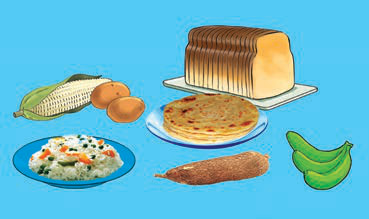
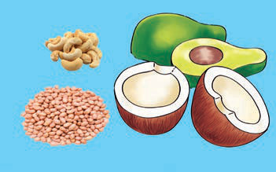
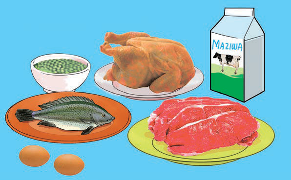

Picha A. Vyakula vyenye kabohaidreti. Vyakula vya kabohairdeti kama mkate, wali, mahindi, viazi, muhogo, chapati na ndizi mbichi.
(a) Vyakula vyenye kabohaidreti

Picha B. Vyakula vyenye mafuta. Vyakula vyenye mafuta kama korosho, karanga, nazi na parachichi.
(b) Vyakula vyenye mafuta
Kielelezo namba 3: vyakula vyenye virutubisho vya kabohaidreti na mafuta.
Vyakula vya kujenga mwili
Vyakula vya kujenga mwili ni vyenye virutubisho vya protini. Vyakula hivyo ni kama vile samaki, maziwa, nyama, mayai, njegere na maharage. Kazi ya vyakula hivi ni kujenga mwili na kuufanya ukue vizuri. Pia, vyakula hivi hutumika kutengeneza seli mpya ili kuchukua nafasi ya seli zilizozeeka au kufa. Kielelezo namba 4 kinaonesha vyakula vya kujenga mwili.

Maelezo ya picha: Vyakula vya kujenga mwili kama maziwa, samaki, nyama, kuku, mayai na kunde.
Kielelezo namba 4: vyakula vya kujenga mwili.
Vyakula vya kulinda mwili
Vyakula vya kulinda mwili ni vyenye vitamini na madini. Vyakula hivi husaidia kuimarisha afya na kuwezesha mwili kujikinga na magonjwa. Pia, husaidia kujenga na kuimarisha